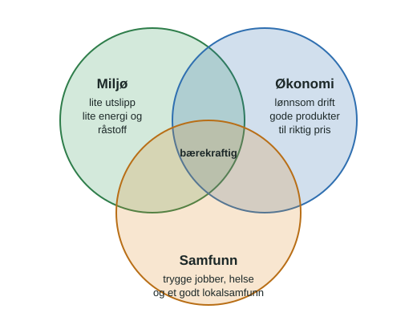

Hva er bærekraftig produksjon?
Prosessindustrien lager metaller, kjemikalier og materialer som samfunnet trenger. Samtidig bruker den mye energi og råstoff, og den har utslipp. Bærekraftig produksjon handler om å lage det samfunnet trenger, uten å ødelegge for dem som kommer etter oss.
Bærekraftig utvikling
Begrepet bærekraftig utvikling ble kjent i 1987 gjennom en FN-rapport som Gro Harlem Brundtland ledet arbeidet med. Kort sagt betyr det at vi skal dekke behovene våre i dag på en måte som ikke ødelegger mulighetene for kommende generasjoner.
For en bedrift betyr det at den ikke kan bruke opp naturen, forurense den eller slite ut menneskene. Da vil ikke produksjonen kunne fortsette i lengden.
Tre sider av bærekraft
Bærekraft har tre sider som henger sammen. En produksjon er bare bærekraftig når alle tre er ivaretatt.

| Side | Hva betyr det? | Eksempel fra et smelteverk |
|---|---|---|
| Miljø | Lite utslipp, lite avfall og sparsom bruk av energi og råstoff. | Filtre som fanger støv, og varme fra ovnsgassen som brukes på nytt. |
| Økonomi | Bedriften må tjene penger for å kunne betale lønn, investere og overleve. | Et nytt renseanlegg må betales. Bedriften må selge nok metall til en pris kundene godtar. |
| Samfunn | Trygge og gode arbeidsplasser, god helse og et levende lokalsamfunn. | Mange arbeidsplasser i en liten kommune, og et arbeidsmiljø der ingen blir syke av støv eller gass. |
Ofte må bedriften velge mellom hensyn som trekker i ulike retninger. Et tiltak som er bra for miljøet, kan koste så mye at arbeidsplassene blir truet. Derfor må tiltak drøftes: man må veie fordeler mot ulemper. Det lærer du mer om på siden Drøft et miljøtiltak.
Prosessindustrien er både problem og løsning
Industrien står for en stor del av utslippene av klimagasser i Norge, altså gasser som CO2 som gjør at jorda blir varmere. Samtidig trengs produktene for å få til et grønt skifte, altså overgangen til et samfunn med mindre utslipp:
- Aluminium gjør biler og fly lettere, så de bruker mindre energi.
- Mangan gjør stål sterkere. Sterkt stål trengs i vindturbiner, bruer og skip.
- Silisium brukes i solceller og elektronikk.
Spørsmålet er derfor sjelden om vi skal ha prosessindustri. Spørsmålet er hvordan produksjonen kan bli så miljøvennlig som mulig. Når norske smelteverk bruker strøm fra vannkraft, blir utslippene ofte lavere enn når det samme metallet lages i land der strømmen kommer fra kull.
FNs bærekraftsmål
I 2015 ble alle landene i FN enige om 17 bærekraftsmål som skal nås innen 2030. Flere av dem handler direkte om industrien:
| Mål | Navn | Hva betyr det for prosessindustrien? |
|---|---|---|
| 7 | Ren energi for alle | Bruke fornybar energi og spare energi. |
| 9 | Industri, innovasjon og infrastruktur | Utvikle ny og renere teknologi. |
| 12 | Ansvarlig forbruk og produksjon | Mindre avfall, mer gjenvinning og sparsom bruk av råstoff. |
| 13 | Stoppe klimaendringene | Kutte utslippene av CO2 og andre klimagasser. |
| 14 | Livet i havet | Hindre utslipp til fjorden og havet. |
Miljøvennlig produksjon
Miljøvennlig produksjon betyr å lage det samme produktet med mindre råstoff, mindre energi, mindre utslipp og mindre avfall. Det er miljøsiden av bærekraft, og den du som operatør eller laborant påvirker mest i den daglige jobben. På de neste sidene ser du hvor utslippene kommer fra, hvilke tiltak som finnes, og hvilke regler bedriften må følge.
Mange bedrifter skriver i årsrapporten hvordan de jobber med bærekraft. Når du søker læreplass, er det lurt å lese hva bedriften selv skriver. Da vet du hva de er opptatt av, og du kan spørre om det i intervjuet.
Test deg selv
1. Hva betyr bærekraftig utvikling?
- At industrien skal produsere så mye som mulig
- At vi dekker behovene våre i dag uten å ødelegge mulighetene for kommende generasjoner
- At all industri skal legges ned
Bærekraftig utvikling handler om å tenke langsiktig: det vi gjør i dag, skal ikke ødelegge for dem som kommer etter oss.
2. Hvilke tre sider har bærekraft?
- Luft, vann og jord
- Råstoff, energi og produkt
- Miljø, økonomi og samfunn
Alle tre sidene må være ivaretatt. Luft, vann og jord er der utslippene havner, og det er en del av miljøsiden.
3. En bedrift setter i gang et miljøtiltak som er så dyrt at bedriften går konkurs. Hvorfor er ikke det bærekraftig?
- Den økonomiske siden er ikke ivaretatt, og arbeidsplassene forsvinner
- Fordi miljøtiltak aldri virker
- Det er bærekraftig, for miljøet er det eneste som teller
Bærekraft krever balanse. Et tiltak som bare tar hensyn til miljøet, kan ødelegge den økonomiske og den sosiale siden.
4. Hvorfor sier vi at prosessindustrien er både et problem og en løsning?
- Fordi den bare lager produkter som ingen trenger
- Den har store utslipp, men lager materialer som trengs for å kutte utslipp i resten av samfunnet
- Fordi den ikke har utslipp i Norge
Aluminium, mangan til stål og silisium trengs i blant annet lette kjøretøy, vindturbiner og solceller. Derfor er målet å lage dem så miljøvennlig som mulig.
5. Hva betyr miljøvennlig produksjon?
- Å lage mindre av produktet
- Å bare bruke råstoff fra Norge
- Å lage det samme produktet med mindre råstoff, energi, utslipp og avfall
Målet er ikke å lage mindre, men å lage det samme på en bedre måte.
Ordliste
| Begrep | Forklaring | Engelsk |
|---|---|---|
| bærekraftig utvikling | Utvikling som dekker behovene i dag uten å ødelegge mulighetene for kommende generasjoner. | |
| bærekraftsmål | De 17 målene som landene i FN ble enige om i 2015, for en bærekraftig verden innen 2030. | |
| miljøvennlig produksjon | Å lage et produkt med minst mulig bruk av råstoff og energi, og minst mulig utslipp og avfall. | |
| grønt skifte | Overgangen fra et samfunn som bygger på fossil energi, til et samfunn med lave utslipp av klimagasser. |
Les mer
- Prosessindustri i Sauda og omegn: bedriftene i nærheten.
- FN-sambandet (fn.no) har en oversikt over alle de 17 bærekraftsmålene.
Om kildene: Teksten, eksemplene og figurene på denne siden er laget for dette nettstedet. Siden bygger på undervisningsopplegg i kjemiprosess- og laboratoriefag ved Sauda vgs, som er utarbeidet med utgangspunkt i blant annet Kjemien stemmer, Laboranten og åpne nettkilder.